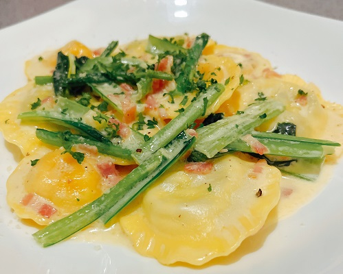
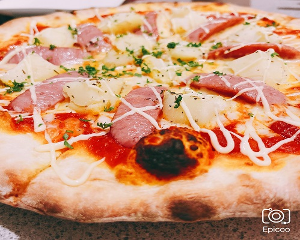

おいしいもの（大垣）
へげせんピザさん（岐阜県大垣市）
本日ご紹介するのは岐阜県大垣市静里にあるへげせんピザ。
近隣に朝ラーメンで有名な麵屋みつるさんがあるなど、地味～にグルメ激戦区。
市民病院近くの交差点（かんてい局さんがあるとこ）を右折してずうっと行った先、ぽつんとたたずむイタリアンカラーの旗が目印。
うっかり見失いがちなので注意。
お店のホームページによると、ランチタイムに友達でわいわいしたり、
バルタイムにはおいしいイタリアンとお酒を楽しんだり、
シーンに合わせて様々な楽しみ方ができるイタリアン料理店のようです。
テイクアウトメニューとしてイタリアンBENTOも作られています。
電話や店頭で頼んで持ち帰ることもできますし、お弁当はイオンモール大垣のわくわく広場さんでも販売されています。
気になった方は立ち寄ってみてくださいね。
メニューはこんな感じ。
もうちょい写真撮っとけばよかった、、、
どれも個性的で、満足感があってとってもおいしい。
今回は友人と一緒にピザとパスタを一個ずつシェアすることにしました。
掘りごたつのお席に通されて早速注文します。
カウンター席もあります。pasta：２色のラビオリをお好きなソースで(￥1,180)

バルタイム限定メニューみたい？です。
「え、なんだろうこれ？」「よくわかんないけど美味しそうだね〜」と言いつつ注文おしゃれなものはよくわからない＾＾；
ホームページにはこのように書かれています。
確か、四種くらいのソースから好きなものをかけていただけます。何かけてもらったかはちょっとよく覚えてないけど、、（おい）
もっっっちり！な生地の中には、みっちり詰まったチーズと、トマトやほうれん草のいい香り。
ナイフとフォークで切り分けながら食べましたが、むっちゃいい匂いしました。（バカの感想）
見た目も色鮮やかで可愛い。個人的にはリコッタ＆ほうれん草がお気に入り。
こういうの初めて食べたんですがめっちゃおいしいですね。女子会には間違いない一品だと思います
pizza：ハーブポテマヨとフランクのピザ(￥1,274)
え、だよね？あってるよね？（コラ） 
やっぱり注目はずっしりとした重量感。写真では伝わらないと思いますが、食べてみると思った以上に腹持ちがいい。
重くてくどいという意味ではないです。本当に美味しいのでぺろっといけちゃう。おいしい。
ポテトやソーセージのカリッとした食感と、外側はカリカリに焼かれていながら内側はもちもちとした生地。それとマヨネーズとハーブの匂いが相性抜群。
食べれば食べるほど食欲がそそられちゃう。おいしい。さっきからおいしいしか言ってない。ブログ向いてなさすぎ。
とっても腹持ちがいいので、お腹いっぱい食べたい方には特にピザがおすすめです。もちろんパスタもお腹いっぱい食べられますよ。
一番人気だという海老と貝柱のピザも過去に食べたことがあるのですが、具材のゴロゴロ感がもうたまらんくて、食べれば食べるほどに貝柱の甘みが染みるんですよ。おいしい。
もし願いが叶うならシーフードピザだけでも全部私が食べ尽くしたい。
せっかくだしもう一品ずつくらい頼もうか？って話になって、選んだのがこちら。
desert：チーズケーキ
ごめんなさいホームページにも載ってないし記憶も朧げなので値段とか商品名とか覚えてないです！（ええ・・）
根拠はないけど、デザートメニューとかはちょいちょい変わってたりするのかな？って印象を受けたので、正確な情報は店頭で確認されるのが良いと思います。根拠はないけど…
チーズの味も濃厚だし、下のタルト生地部分もサクサクした食感が美味。なんでこんなに全部美味しいんですか？
へげせんさんに初めて行ったときは食べたことがない面白さとひたすらに美味い！としか言えないお味に驚きました。
私、おいしいものなんか全然食べてこなかったんだな、、
友人は確かオレンジのフルーツタルト的なの頼んでました。今度行った時にあったら食べたいです、本当にめっちゃ美味しそうだったので。
忘れてましたが、食べログでバルタイムに使えるドリンク一杯無料券も掲載されてます。
柚子のなんかおしゃれなドリンクいただきましたが、これも美味しくて、友人との久しぶりの時間を充実したものにできました。ありがとうございました。
大切な人とのお食事にも！
多くの人に喜んでいただけること間違いなし！なお店です。
ごっつぁんっした！
- へげせんピザ
- イタリアンレストラン＆バル
- address
- 岐阜県大垣市静里町278-1 一光静里ビル1F
課題の一環で作ったけど、また不定期にいじりたいなあ。
・・いや、でも全てをこの熱量でやるの無理だぞ。どうしよ・・・・
お店のHPはこちら→https://hegesen-pizza.com/
インスタグラムもやられています。→https://www.instagram.com/hegesen_pizza/
“孤独なイケメン（！？）シェフ“さんが元気にやられています笑
何かあればこちらから。→